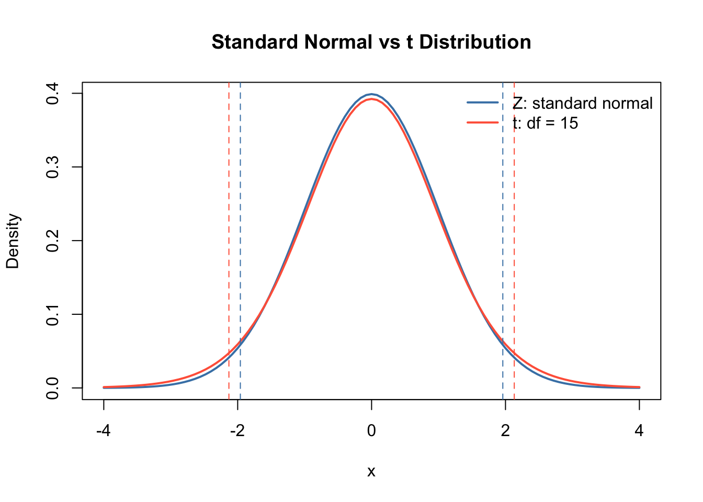

By the end of this section, you should be able to:
Construct one-sample confidence intervals using both the \(Z\) and \(t\) methods.
Explain why the \(Z\) and \(t\) intervals are slightly different.
Conduct a two-sample mean hypothesis test in two equivalent ways:
by constructing a confidence interval for the mean difference;
by computing a test statistic and p-value.
We encourage you to work out the following problems with pen and paper, and treat R as a calculator/look-up table. Hence, most commands are provided. :)
29 Problem 1: Confidence intervals from a butterfly field study
A biology team is studying a certain butterfly species. They collected a random sample of butterflies. Each butterfly is measured from wingtip to wingtip, then released.
The researchers want a 95% confidence interval for the true mean wingspan \(\mu\) of butterflies in this area.
29.1 Step 1.a: Z confidence interval
The \(Z\) interval is appropriate when the population standard deviation \(\sigma\) is known.
Write down a 95% confidence interval using the \(Z\) method, pretending the population standard deviation is known and equal to \(\sigma = 1.6\) mm. Identify which summary statistics to use.
Your answer:
29.2 Step 1.b: t confidence interval
In most real field studies, \(\sigma\) is unknown, so we use the sample standard deviation \(s\) and a \(t\) critical value.
Write down a 95% confidence interval using the \(t\) method, treating \(\sigma\) as unknown. Identify which summary statistics to use.
Your answer:
29.3 Step 2: Summary statistics
Compute the sample mean and sample standard deviation.
n <-length(wingspan)xbar <-mean(wingspan)s <-sd(wingspan)
For a Z-confidence interval, we need
sigma <-1.6se_z <- sigma /sqrt(n) # SE is SD/sqrt(n)
For a t-confidence interval, we need
df <- n -1se_t <- s /sqrt(n)
29.4 Step 3: Identify confidence level and look up critical-value
curve(dnorm(x), from =-4, to =4,col ="steelblue", lwd =2,main ="Standard Normal vs t Distribution",xlab ="x", ylab ="Density")curve(dt(x, df =15), from =-4, to =4,col ="tomato", lwd =2, add =TRUE)abline(v =c(-1.96, 1.96), col ="steelblue", lty =2)abline(v =c(-2.131, 2.131), col ="tomato", lty =2)legend("topright",legend =c("Z: standard normal", paste0("t: df = ", 15)),col =c("steelblue", "tomato"),lwd =2,bty ="n")

Your answer:
Hint: Which confidence interval is wider? Can you explain why?
30 Problem 2: Two-sample test from two butterfly habitats
The same research team now compares butterflies from two habitats A and B. The team wonders whether butterflies from the two habitats have different mean wingspans. Again, they want to use significance level \(\alpha = 0.05\).
habitat wingspan_mm
1 A 48.6
2 A 52.1
3 A 50.4
4 A 49.7
5 A 53.0
6 A 51.2
7 A 54.1
8 A 50.8
9 A 52.7
10 A 49.9
11 A 51.6
12 A 53.4
13 A 50.2
14 A 48.9
15 A 52.3
16 A 51.0
17 B 46.8
18 B 49.1
19 B 47.5
20 B 48.3
21 B 50.0
22 B 46.9
23 B 49.7
24 B 47.8
25 B 48.6
26 B 45.9
27 B 50.4
28 B 47.2
The purpose of a hypothesis test is to test a claim and determine if there is sufficient evidence in favor of that claim. Hypothesis testing always follows a standard procedure, we can break it down to the following 5 steps.
30.1 Step 1: Write down the hypothesis
What is the null and alternative hypothesis?
Your answer:
30.2 Step 2.a: Construct confidence intervals
One way is to use a confidence interval for \(\mu_{A} - \mu_{B}\) to test the null hypothesis. Write down a 95% confidence interval using the \(t\) method, treating standard deviation as unknown. Identify which summary statistics to use.
Your answer:
30.3 Step 2.b: Compute test statistics
Alternatively, we can use a p-value to test the null hypothesis. Write down the test statistics under the null hypothesis. Identify which summary statistics to use.
Your answer:
30.4 Step 3: Summary statistics
First compute the sample means for the two habitats.
xbar1 <-mean(habitat_A)xbar2 <-mean(habitat_B)
The observed mean difference is
diff_means <- xbar1 - xbar2diff_means
[1] 3.060417
Note that degree of freedom and standard error are more complicated, we have introduced two methods to estimate them in class – Welch’s unpooled standard error, and pooled standard error. Welch’s method is usually the safer default because it does not require equal population variances. The pooled test can be reasonable when the two groups are believed to have similar variances, either from scientific knowledge or from the data.
In this exercise, we focus on using the Welch’s unpooled standard error,
\[df = \frac{\left(\frac{s_1^2}{n_1} + \frac{s_2^2}{n_2}\right)^2}
{\frac{(s_1^2/n_1)^2}{n_1-1} + \frac{(s_2^2/n_2)^2}{n_2-1}}.\] To compute the standard error, we also need sample sizes and standard deviations from the data:
t.test(habitat_A, habitat_B, alternative ="two.sided", var.equal =FALSE)
Welch Two Sample t-test
data: habitat_A and habitat_B
t = 5.3501, df = 25.272, p-value = 1.46e-05
alternative hypothesis: true difference in means is not equal to 0
95 percent confidence interval:
1.882947 4.237886
sample estimates:
mean of x mean of y
51.24375 48.18333
30.6 Step 5: Make a decision
Confidence interval interpretation:
Your answer:
p-value interpretation:
Your answer:
30.7 Conclusion
Both approaches answer the same question: is the mean wingspan different between the two habitats?
The confidence-interval approach and the p-value approach agree:
If the 95% confidence interval excludes 0, then the two-sided p-value is below 0.05.
If the 95% confidence interval includes 0, then the two-sided p-value is above 0.05.